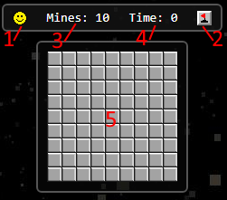
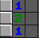
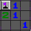
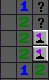

VoidSweeper - Come Giocare
Voidsweeper è semplicemente la mia versione di MineSweeper con solo cambiamenti grafici
Basi

- 1: Clicca la faccina per iniziare una nuova partita
- 2: Bandiere veloci On/Off, utile sui dispositivi mobili per mettere bandiere velocemente
- 3: Contatore di mine
- 4: Timer
- 5: Griglia di gioco
Gameplay
Quando clicchi una casella, se la casella non contiene e non ha mine intorno diventera vuota e aprira automaticamente quelle circostanti
Ma se la casella cliccata ha una o piu mine nelle 8 caselle circostanti assumera un numero equivalente alle mine intorno a essa

Nell' esempio sotto l'1 nell'angolo ha un unica cella non aperta e quindi sappiamo per certezza che quella cella contiene una mina

Se sospetti che una casella contenga una mina fai tasto destro (clic lungo o bandiera veloce On su mobile) sulla casella sospetta, fare cio abbassera il contatore di mine di -1
Se hai messo una o piu bandiere e siete sicuri potete cliccare la casella con il numero e aprire tutte le caselle circostanti automaticamente
Il gioco finisce se clicchi una mina o hai aperto tutte le caselle senza mine.
Potete scegliere fra 4 difficoltà nel menu
Punti interrogativi
I punti interrogativi possono essere attivati dal menu
Quando rimuovi una bandiera verra messa al suo posto un ? per ricordarvi che non siete sicuri se quella cella sia una mina o no

Legenda


Numero


Bandiera


Mina


Mina Cliccata


Bandiera Sbagliata
- Il team di SkyBase, ADMINSPACE, MB delta e DeltaQuest
- Adam